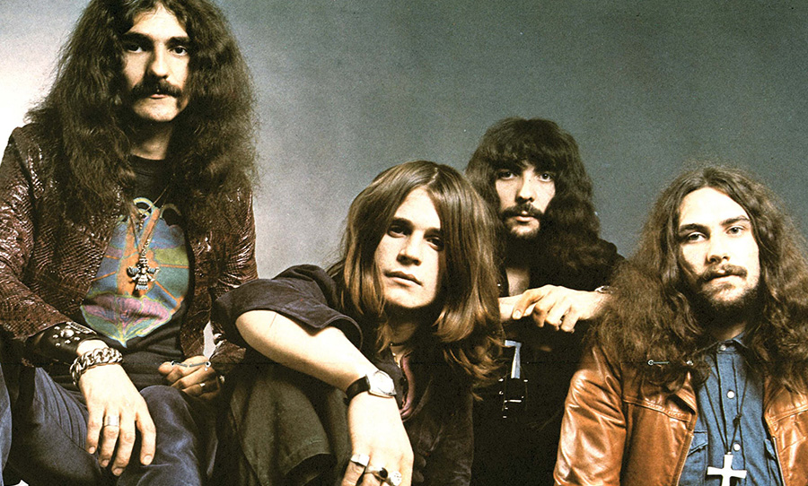
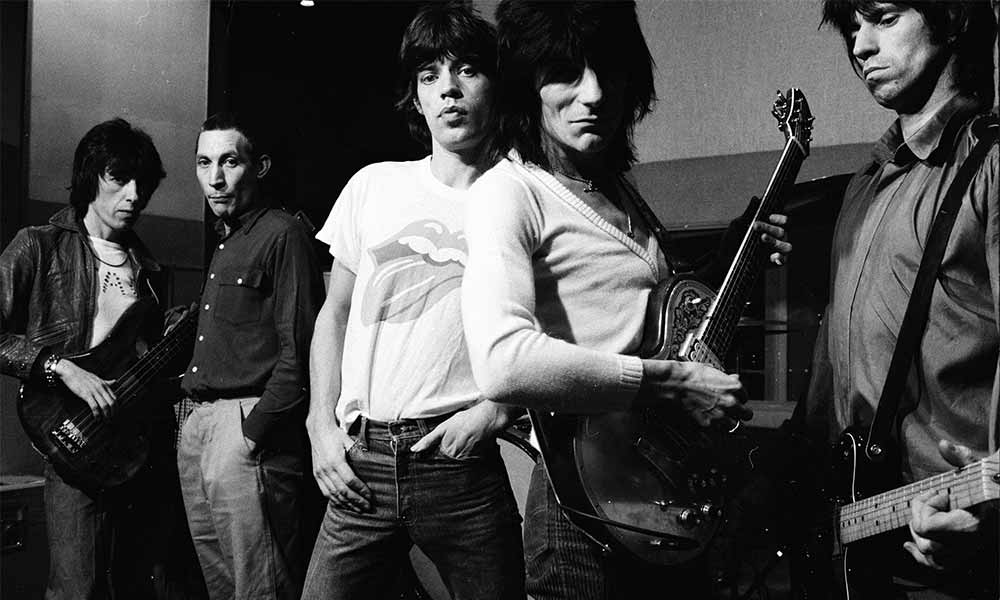

The Rolling Stones are an English rock band formed in London in 1962. The first stable line-up consisted of bandleader Brian Jones (guitar, harmonica, keyboards), Mick Jagger (lead vocals, harmonica), Keith Richards (guitar, vocals), Bill Wyman (bass guitar), Charlie Watts (drums), and Ian Stewart (piano).

AC/DC (stylized as ACϟDC) are an Australian rock band formed in Sydney in 1973 by Scottish-born brothers Malcolm and Angus Young. Although their music has been variously described as hard rock, blues rock, and heavy metal, the band themselves call it simply "rock and roll"

Black Sabbath were an English rock band formed in Birmingham in 1968 by guitarist Tony Iommi, drummer Bill Ward, bassist Geezer Butler and vocalist Ozzy Osbourne. They are often cited as pioneers of heavy metal music.[1] The band helped define the genre with releases such as Black Sabbath (1970), Paranoid (1970).
Highway to Hell is the sixth studio album by Australian hard rock band AC/DC, released on 27 July 1979. It was the band's fifth studio album released internationally and the sixth to be released in Australia.
"Sympathy for the Devil" is a song by English rock band the Rolling Stones, written by Mick Jagger and Keith Richards. It is the opening track on their 1968 album Beggars Banquet.
"N.I.B." is a song released by British rock band Black Sabbath. It first appeared as the fourth track on the band's 1970 debut album, Black Sabbath. The lyrics are in the first person from the point of view of Lucifer.